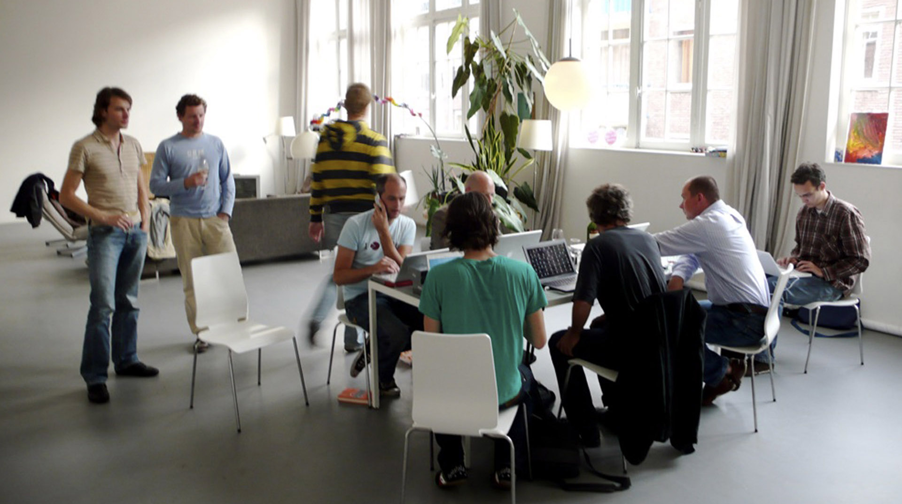

-

-

- 
-

-

1991 – Ronald Mace
planteó la necesidad de un nuevo enfoque sobre el diseño de productos y entornos para que pudieran ser utilizados por el mayor número posible de personas. En 1997 se establecieron los 7 principios del Diseño Universal (Center for Universal Design). El Diseño Universal sigue siendo un concepto desconocido o confuso para muchas personas. Es importante y oportuno insistir en esta tendencia que cobra cada día más importancia por el sostenido aumento de la población de mayor edad y el derecho a la participación activa de las personas con discapacidad o con deficiencias en su funcionalidad. A medida que envejecemos disminuyen algunas de nuestras capacidades: decrece nuestra fuerza, alcance, movilidad, agudeza visual y audición. Progresivamente la interacción con las condiciones del entorno comienzan a provocar conflictos. Así mismo, el grado de discapacidad de las personas depende de las condiciones del entorno. Si son desfavorables (entornos, comunicación o comprensión inaccesibles) provocarán una restricción de participación aumentando su grado de discapacidad. Las normativas y ordenanzas legales cumplen el objetivo de definir estándares mínimos de accesibilidad enfocados en grupos específicos (principalmente discapacidades físicas y ceguera) aportando soluciones básicas.
contactanos en el siguiente enlace, cuéntanos de tu proyecto y nos pondremos en contacto a la brevedad
Solicitar Informes